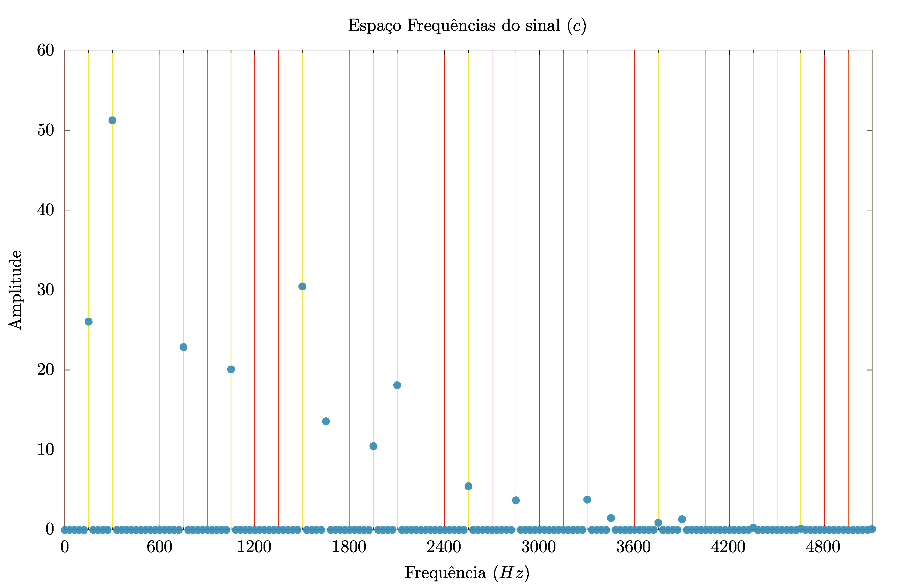
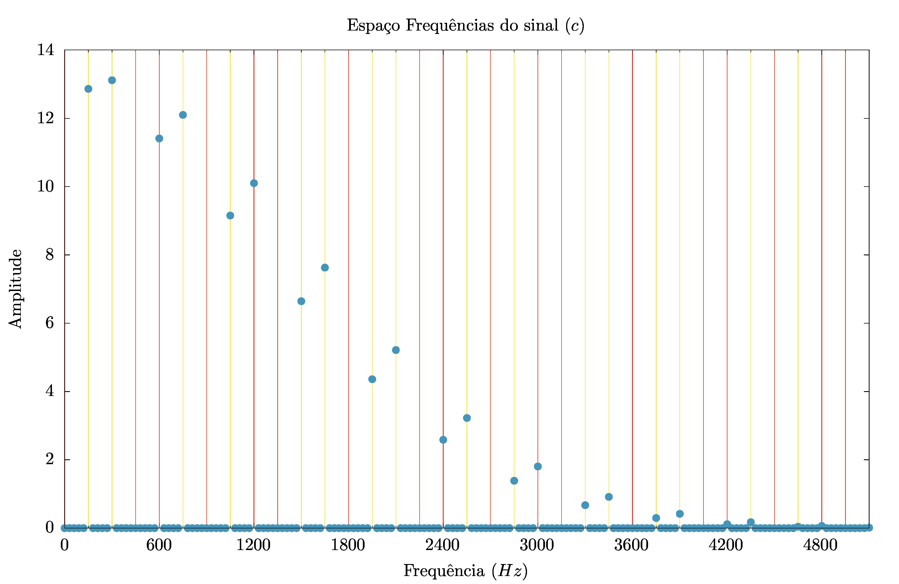
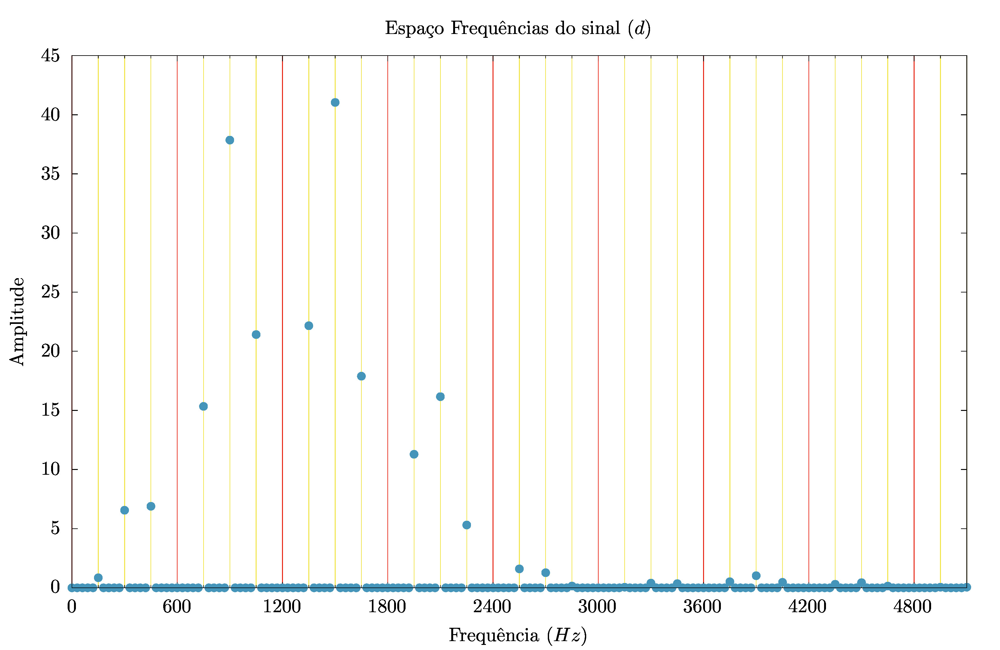
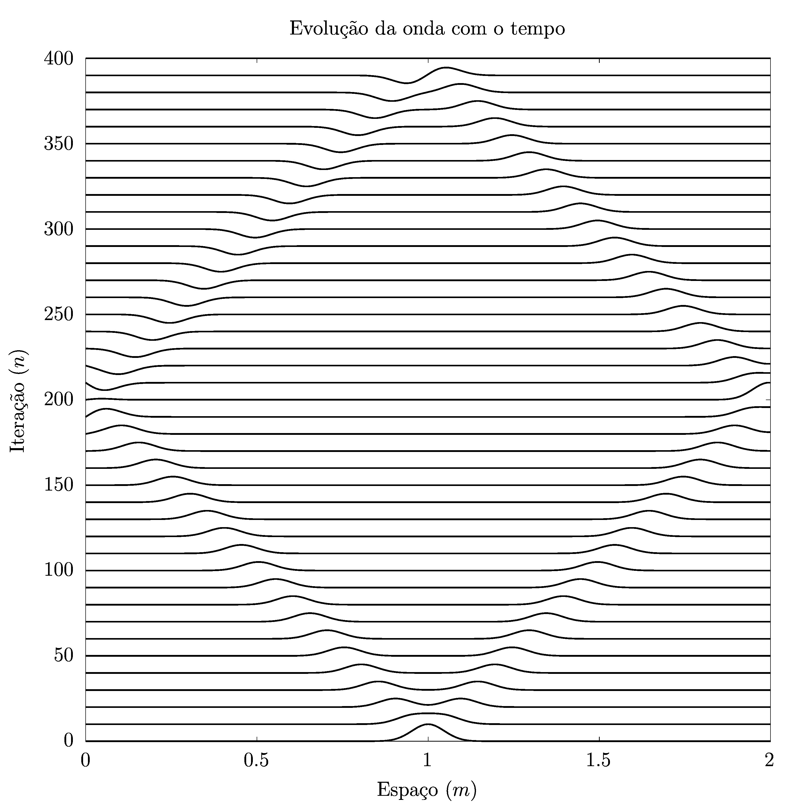
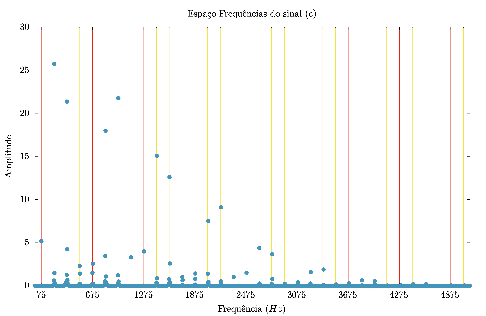

EQUACÕES DE ONDA II
Análise de Fourier
Edgard Macena Cabral Nº 11820833
Abril 2023
Introdução
Nesse projeto, estamos interessados em misturar o que fizemos nos dois projetos anteriores. Notoriamente, vamos usar a equação discretizada da onda, que, quando unida as condições de contorno, nos permite descrever ondas lineares. E observar o resultado para diferentes pontos iniciais da onda.
e a transformada discretizada de Fourier
Com o detalhe de que medimos o espectro de potências, isso é
\[P_k = \mathbb{I}(Y_{k})^2 + \mathbb{R}(Y_{k})^2 \]
A questão principal se torna: como as frequências observadas em um ponto dependem da posição inicial da onda.
Como sabemos, séries de Fourier não são únicas e, pensando com cuidado, podemos nos lembrar que os harmônicos apresentam nós. Se posicionamos nossa observação em um ponto que, por azar, seja o nó de uma das frequências do sinal (alás!) não poderemos observá-la.
Isso que buscamos entender na prática nesse projeto.
Módulos usados
Buscamos modularizar os projetos anteriores de maneira a podermos reusá-los nesse. Os arquivos produzidos estão a seguir:
Módulo da transformada de Fourier
module fourierMod
implicit none
public :: escreveFrequencias
contains
subroutine escreveFrequencias(y_t, dt, N, file)
real*8, intent(in) :: dt, y_t(:)
real*8 :: frequencia
integer :: k, N, M, file
complex*16 :: currYk
! M é o maior natural < N/2
M = floor((N-1)/2.d0)
write(*,*) "M (M/2-1): ", M, "N :", N
do k = 0, M
currYk = Yk(k, y_t, N)
frequencia = k/(N*dt)
write(file,'(3000F20.8)') frequencia, &
real(currYk)**2 + aimag(currYk)**2
end do
end subroutine escreveFrequencias
complex*16 function Yk(k, y_t, N)
integer, intent(in) :: k
integer, intent(in) :: N
real*8:: y_t(:)
complex*16 :: i = (0,1)
real*8, parameter :: pi = acos(-1.d0)
integer :: j
Yk = (0,0)
somatoria : do j = 1, N
Yk = Yk + y_t(j)*exp(2.d0*pi*i*j*k/N)
end do somatoria
end function Yk
end module fourierMod
Note aqui que não estamos diferenciando os senos dos cossenos, observando apenas a “potência” associada a frequência
Módulo de ondas
e
module ondasMod
implicit none
public :: Gaussiana, dancaDaCadeira, propagaPresoPreso, imprimeOnda
contains
function Gaussiana(i, dx, x0, sigma)
real*8, intent(in) :: dx, x0, sigma
integer, intent(in) :: i
real*8 :: x, Gaussiana
x = i*dx
Gaussiana = exp(-1*((x-x0)/sigma)**2)
end function Gaussiana
subroutine propagaPresoPreso(ondaAnterior, ondaAtual, ondaPosterior, r, size_x)
real*8, intent(in) :: ondaAnterior(:), ondaAtual(:), r
integer, intent(in) :: size_x
real*8, intent(out) :: ondaPosterior(:)
! y_n+1(i) = 2(1-r^2)*y_n(i) - y_n-1(i) + r^2*y_n(i+1) + y_n(i-1)
ondaPosterior(2:size_x-1) =&
2*(1-r**2)*ondaAtual(2:size_x-1) - ondaAnterior(2:size_x-1) &
+ (r**2)*(ondaAtual(3:size_x) + ondaAtual(1:size_x-2))
end subroutine propagaPresoPreso
subroutine propagaPresoLivre(ondaAnterior, ondaAtual, ondaPosterior, r, size_x)
real*8, intent(in) :: ondaAnterior(:), ondaAtual(:), r
integer, intent(in) :: size_x
real*8, intent(out) :: ondaPosterior(:)
ondaPosterior(2:size_x-1) =&
2*(1-r**2)*ondaAtual(2:size_x-1) - ondaAnterior(2:size_x-1) &
+ (r**2)*(ondaAtual(3:size_x) + ondaAtual(1:size_x-2))
! Derivada na ponta livre é nula
ondaPosterior(size_x) = ondaPosterior(size_x-1)
end subroutine propagaPresoLivre
subroutine dancaDaCadeira(ondaAnterior, ondaAtual, ondaPosterior)
real*8, intent(inout) :: ondaAnterior(:), ondaAtual(:)
real*8, intent(out) :: ondaPosterior(:)
ondaAnterior(:) = ondaAtual(:)
ondaAtual(:) = ondaPosterior(:)
end subroutine dancaDaCadeira
subroutine imprimeOnda(ondaAtual, file, size_x)
real*8, intent(in) :: ondaAtual(:)
integer :: size_x, file
integer :: i
write(file, '(3000F16.8)') (ondaAtual(i), i=1,size_x)
end subroutine imprimeOnda
end module ondasMod
Programa principal
Para realizar os estudos de frequências obtidas, usamos o programa a seguir, colocado no diretório da tarefa (a) e com a observação das frequências ocorrendo em torno de \(L_{observado} = L/4\)
program tarefa_a use fourierMod use ondasMod implicit none real(8), parameter :: L = 1.d0, c = 300.d0 real(8), parameter :: r = 1.d0, dx = 1.0/200.d0, dt = dx*r/c integer, parameter :: size_x = L/dx + 1, size_t = 1/(3*dt) real(8), dimension(size_x) :: ondaAnterior, ondaAtual, ondaPosterior real(8), dimension(size_t) :: pontoGravado ! y(L/4 ,t) integer :: i ! Ajustamos as condições iniciais ondaAtual = 0.d0 do i = 2, size_x-1 ondaAtual(i) = Gaussiana(i-1, dx, L/2.d0, L/30.d0) end do ondaAnterior(:) = ondaAtual(:) ! Fazemos ponto inicial ondaPosterior = 0.d0 pontoGravado(1) = ondaAnterior((size_x-1)/4+1) ! Iniciamos gravação de L/4 do i = 2, size_t pontoGravado(i) = ondaAtual((size_x-1)/4+1) call propagaPresoPreso(ondaAnterior, ondaAtual, ondaPosterior, r, size_x) call dancaDaCadeira(ondaAnterior, ondaAtual, ondaPosterior) end do open(1, file="saida") call escreveFrequencias(pontoGravado, dt, size_t, 1) close(1) end program tarefa_a
onde apenas alteramos as condiçõs iniciais ou a propagação conforme o necessário.
Tarefa a (\(L_0 = L/2\))
Condições e resultados
. 
Para a tarefa (a), usamos o pacote gaussiano, com nós fixos, centrada em torno de \(L_{0} = \frac{L}{2}\), com \( \sigma = \frac{L}{30}\).
Os resultados obtidos estão a seguir

Onde obsevamos que as frequências de forma \(2n\cdot 150Hz\) estão faltando.
Conclusão sobre os resultados
A ausência de modos normais pares esperado!
Considerando o caráter da onda, com uma subida bem definida e simétrica em torno de \(x = L_0\), seria estranho esperar encontrar modos pares, que estariam agindo construtivamente de um lado e destrutivamente de outro justo no ponto de maior simetria local da onda.
Por causa disso, não conseguimos notar nenhum obscuração de frequências resultante da posição que estamos observando, que deve ocorrer apenas com modos normais múltiplos de 4.
O modo fundamental observado, \(f_{fundamental} = 150Hz\), também nos é esperado! Já sabemos do projeto anterior que o comprimento de onda desse sinal é \(\lambda = 2m\) e a velocidade foi explicitada no código como \(v = 300 m/s\). Nada mais esperado que a nossa frequência fundamenetal obtida.
Tarefa b (\(L_0 = L/4\))
Condições e resultados
Para tarefa (b), apenas alteramos \(L_0\) para \(\frac{L}{4}\)
O resultado obtido está a seguir

Obsevamos que os modos normais associados a 4 vezes a frequência inicial estão ausentes. Ademais as frequências pares restantes são muito mais potentes que as frequências ímpares.
Conclusão sobre os resultados
O fato das frequêcias pares serem muito mais fortes que as frequêcias ímpares está relacionado com a ausência dos modos múltiplos de \(4\), como também será observado na tarefa c.
Tarefa c (\(L_0 = L/3\))
Condições e resultados
Para tarefa (c), alteramos \(L_0\) para \(\frac{L}{3}\)
O resultado obtido está a seguir

Álas! Os modos normais ausentes dessa parecem bem mais patológicos.
A ordem, bonita, esconde um padrão simples: Faltam os modos normais múltiplos de 3 e 4, o que é ressaltado nas linhas vermelhas da imagem.
Conclusão sobre os resultados
As frequência \(3n \cdot 150Hz\) estarem ausentes não surpreendem. Seus senos, em \(t = 0\) colaboram positivamente de um lado e negativamente de outro do máximo de nossa onda. Um comportamente que certamente faria delas um deserviço a nossa reprentação.
Os máximos mais elevados são os modos normais pares. Isso se dá porque os modos pares que restam tem que absorver a potência dos múltiplos de 4.
Para referência, um grafico absorvendo as frequências de tipo \(4n \cdot 150Hz\) está a seguir

Esse efeito é o mesmo que tornou os modos pares (muito) mais potentes na tarefa b
Tarefa d (\(L_0 = L/20\))
Condições e resultados
Para tarefa (d), alteramos \(L_0\) para \(\frac{L}{20}\)
O resultado obtido está a seguir

Um resultado bonito! Vemos duas sequências de amplitudes associadas as frequências, ambas com aparência de gaussiana.
Conclusão sobre os resultados
Novamente as amplitudes elevadas estão relacionadas as frequências pares, que precisam absorver as amplitudes faltantes de \(4n\cdot 150 Hz\).
Ademais, observamos uma aversão a frequências mais baixas, que eram mais potentes até agora. Ao contrário, as frequências médias são as protagonistas. Isso é especialmente notável em \(f = 2\cdot 150 Hz\), muito baixa, enquanto \(6\cdot 150Hz\) explode. Isso se deve ao pico elevado já no início da corda em \(t = 0\).
Tarefa e (Nós livres)
Condições e resultados
Para tarefa (e), tivemos uma alteração significativa: Passamos a considerar uma das pontas como soltas.
A mudança se resumiu a modar a chamada
da propagaPresoPreso para
propagaPresoLivre. Mas
a diferença no resultado foi significativa.
A onda obtida está a seguir:
. 
Onde a onda em \(n = 400\) está representada !! Ela é plana até aonde a vista alcança.

Onde se destaca o fato de as frequências passam a assumir a forma \(f_n = (75 + 150n)Hz\), com uma pequena diferença para frequências muito grandes.
Nota-se que aqui obtemos uma distribuição de frequências muito mais espalhadas. A ponta solta aumenta consideravelmente sua complexidade harmônica.
Conclusão sobre os resultados
A forma das frequências é facilmente explicável pelo fato de que os senos precisam poder apresentar um máximo em \(x = L\), então você precisa adicionar \(1/2 \pi\) a fase, que é justamente o que esse \(75 Hz\) está fazendo.
Notamos que as frequências aparecem para todos os \(n\)s. Em especial, aparecem as frêquencias que tem nós nos máximos da onda em \(t = 0 \). Essas frequêcias não apareciam para pontas presos.
Isso deve se dar pelas condições da onda em n = 390 no gráfico. Temos um perfil de onda que parece justamente o seno em torno de um nó. As freqûencias aparecem para formar esse perfil.
Mas elas são contraprodutivas para onda em \(t = 0\), então precisamos adicionar mais frequências para corrigir a onda nesse instante. Isso dá o perfil errático da onda.